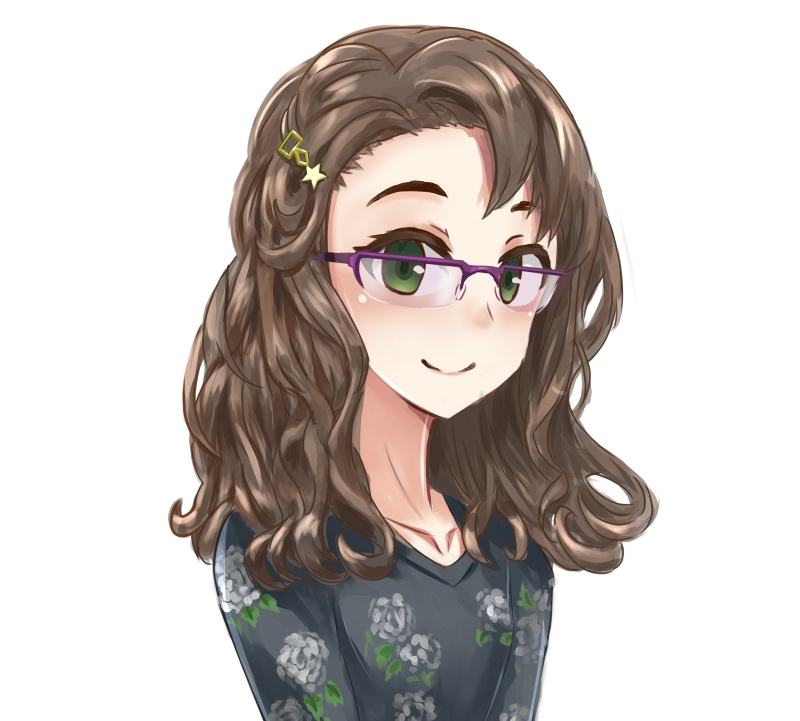

<p>
  Claire’s Cybersecurity Corner is run by Claire A. 
  </br>
  She is a 20-something from Ontario, Canada. 
  </br></br>
  Her educational background includes Computer Science, Cognitive Science, and Network Security.
  </br>
  Claire has a Graduate Certificate in Network Security and a Bachelor’s degree in Computing (Honours) with a specialization in Cognitive Science.
  </br>
  Certification: CompTIA A+, CompTIA Network+, CompTIA Security+, CompTIA CySa+, CompTIA PenTest+, Standard First Aid Class C w/ AED
  </br>
  She enjoys video games, golfing, travelling, music (mainly pop, progressive, jazz, ska), fashion, model trains, talking in third person, makeup, and life's biggest philosophical questions such as the future of AI.
  </br></br>
  This site was made with Jekyll and hosted on Github Pages. Gooooo, Github!
  </br>
  Also, here’s a drawing/commission of me made by a friend:
  </br></br>
  
  


</p>
